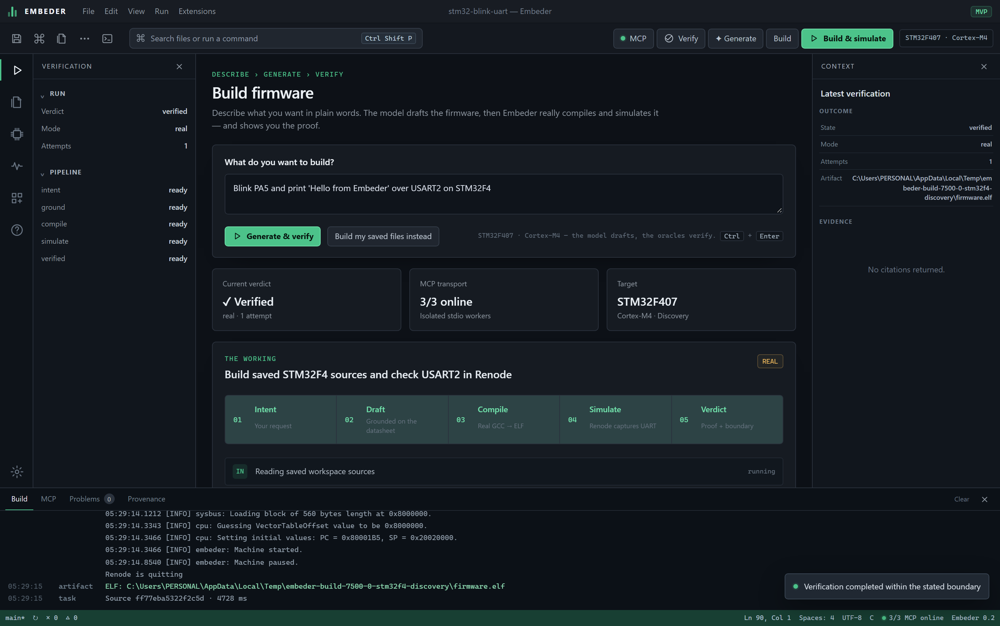
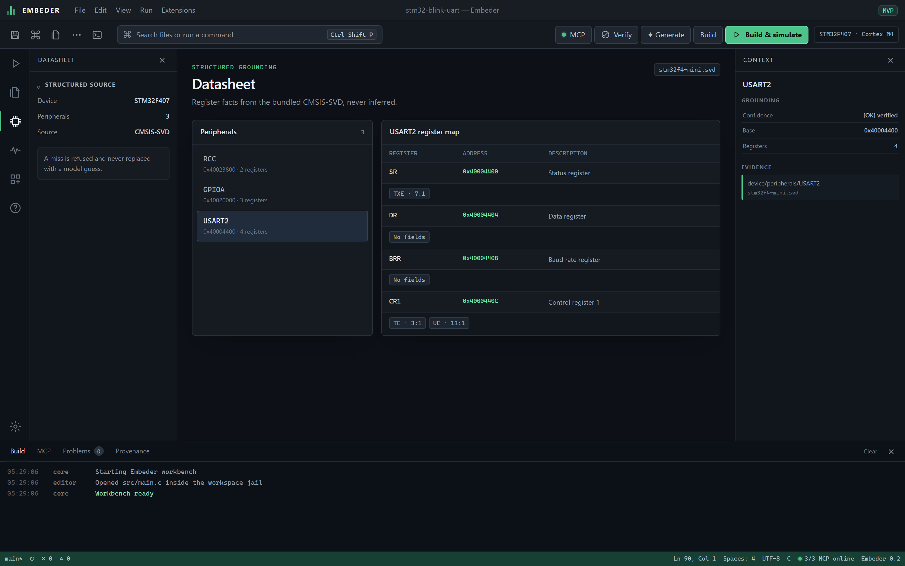
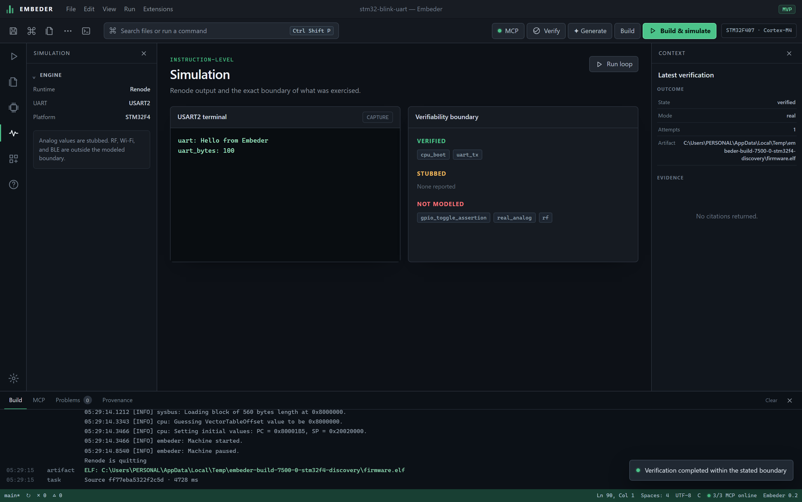
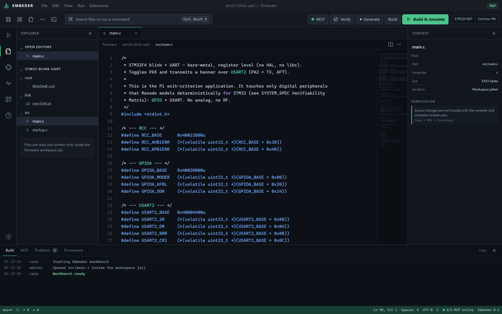
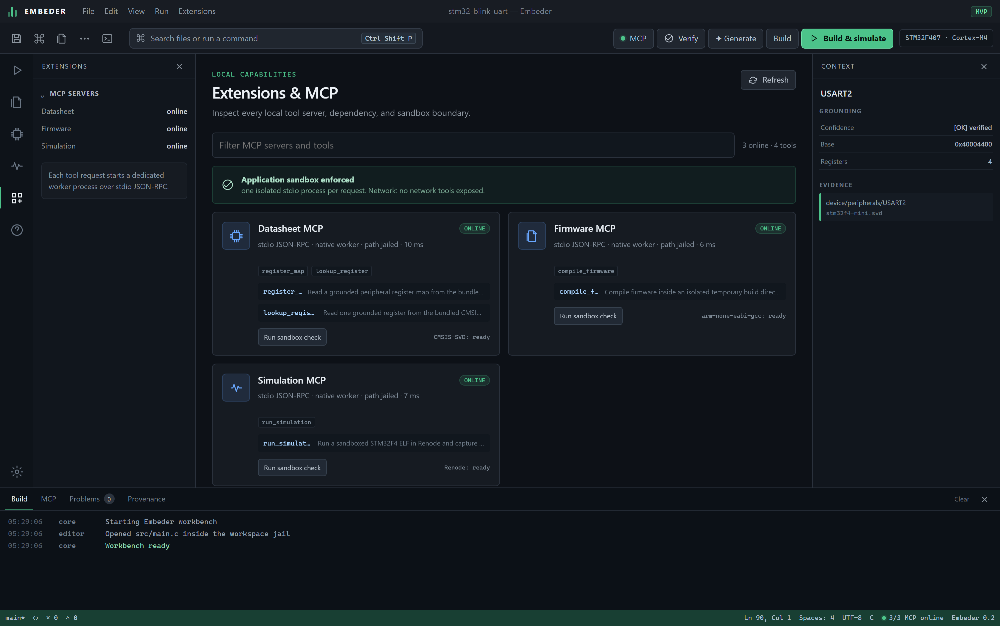

Real toolchains
arm-none-eabi-gcc and Renode run for real — not a mocked pipeline. If it says compiled, it compiled.
Describe what you want in plain words. A model drafts the firmware, a real ARM toolchain compiles it, Renode boots it — and Embeder shows you the evidence. The model drafts. Deterministic oracles decide.
Windows 10/11 · x64 — source builds available · no telemetry

Every draft crosses a verifiability boundary. Compiler diagnostics drive a bounded repair loop; only a real build and a real simulation can promote a result to verified.
Register addresses come straight from bundled CMSIS-SVD data and travel with a source citation. A miss is refused — never silently replaced with a model guess.
0x40004400.stm32f4-mini.svd.
Renode boots the real ELF, observes USART2, and records exactly what was — and was not — exercised. The boundary is explicit, so you always know the limits of the proof.
uart: Hello from Embeder — 100 bytes, asserted.
Edit register-level C in a familiar workbench. Generated drafts land as an unsaved buffer you can read line-by-line before anything touches disk — the app is a transparency surface, not an autopilot.

The datasheet, firmware and simulation tools run as child processes over stdio JSON-RPC, with application-level path checks. The renderer never decides verification state — a shared Rust core does.

arm-none-eabi-gcc and Renode run for real — not a mocked pipeline. If it says compiled, it compiled.
CMSIS-SVD is the structured source of truth. Prose gets RAG; addresses do not.
Workspace path checks and a fixed MCP tool catalog. OS-level worker isolation remains on the roadmap.
Read the code, run the oracles, challenge the boundary. A Rust core with Python MCP servers.
Auto-detects Gemini, OpenAI-compatible, or Vercel AI Gateway. No key? Deterministic fallback.
Every stage writes a record — who drafted, what compiled, what the simulator saw.
Every fact and result carries a tier. You always know how much to trust a claim, and why.
Confirmed by a deterministic oracle — a real compile or simulation run.
Grounded and plausible, but not independently proven end-to-end.
Model guidance outside the verifiable boundary — treat as a hint.
Refused rather than faked — e.g. RF, wireless, or unmodeled analog.
Download the workbench, wire in your model, and let deterministic oracles have the final word.